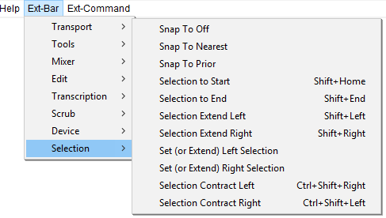

Ext-Bar Menu: Selection
- Click, or hover, on any menu item in the image to read about that command. Skip the image
- 
Snap To Off
Equivalent to setting the Snap To control in Selection Toolbar to "Off".
Snap To Nearest
Equivalent to setting the Snap To control in Selection Toolbar to "Nearest".
Snap To Prior
Equivalent to setting the Snap To control in Selection Toolbar to "Prior".
Selection to Start Shift+Home
Select from cursor to start of track
Selection to End Shift+End
Select from cursor to end of track
Selection Extend Left Shift+Left
Increases the size of the selection by extending it to the left. The amount of increase is dependent on the zoom level. If there is no selection one is created starting at the cursor position.
Selection Extend Right Shift+Right
Increases the size of the selection by extending it to the right. The amount of increase is dependent on the zoom level. If there is no selection one is created starting at the cursor position.
Set (or Extend) Left Selection
When playing or recording, sets the left boundary of a potential selection by moving the cursor to the current position of the green playback cursor (or red recording cursor). The selection can then be drawn by using "Set (or Extend) Right Selection"(below).
When stopped, increases the size of the selection by extending it to the left. The amount of increase is dependent on the zoom level. If there is no selection one is created starting at the cursor position.
Set (or Extend) Right Selection
When playing or recording, sets the right boundary of the selection, thus drawing the selection from the cursor position to the current position of the green playback cursor (or red recording cursor). This is a quick way to mark a selection for future editing while playing or recording. Selections can be labeled while playing or recording using or shortcut Ctrl + B.
When stopped, increases the size of the selection by extending it to the right. The amount of increase is dependent on the zoom level. If there is no selection one is created starting at the cursor position.
Selection Contract Left Ctrl+Shift+Right
Decreases the size of the selection by contracting it from the right. The amount of decrease is dependent on the zoom level. If there is no selection no action is taken.
Selection Contract Right Ctrl+Shift+Left
Decreases the size of the selection by contracting it from the left. The amount of decrease is dependent on the zoom level. If there is no selection no action is taken.